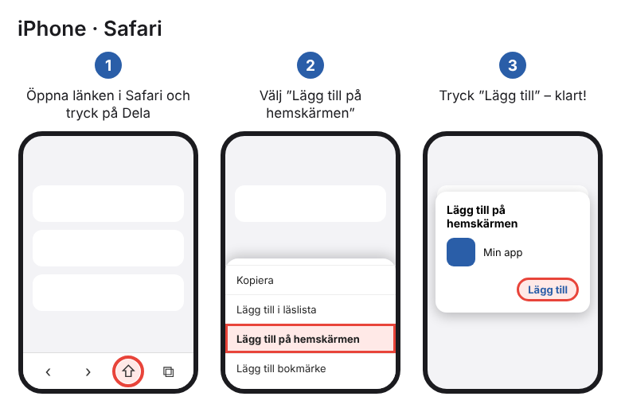
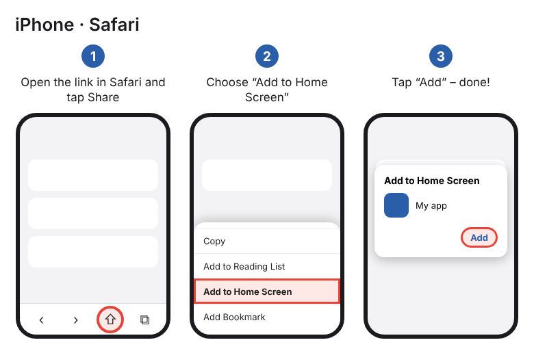

🐷 Sparkonton
Inställningar
Hushåll
Personer
Valfritt. Lägg till personerna i hushållet så kan varje inkomst och kostnad kopplas till en person – eller vara gemensam.
Inkomstkategorier
Kostnadskategorier
Lönedag
Får du lön t.ex. den 25:e räcker lönen den 25 november till december: den månaden heter December och gäller 25 nov – 24 dec.
Startsaldo
Valfritt. Visar löpande saldo i översikten från vald månad.
Valuta
Hemvaluta
Byter du valuta räknas alla belopp om med valutakurserna (Ångra finns). Sparkonton behåller sin egen valuta.
Valutakurser
Ungefärliga kurser för sparkonton i utländsk valuta. Appen hämtar inga kurser – ändra dem själv när du vill.
Allmänt
Språk
DataBackup, import, radera
Fler valCSV, text, egen kod, radera
Ett okrypterat kalkylark, t.ex. för Excel.
Klistra in text
All data finns bara i den här webbläsaren. Läs in backup-filen på en annan enhet för att flytta den.
Papperskorg
Poster, avvikelser och sparkonton du tar bort ligger här i 30 dagar. Sedan raderas de för gott.
Alla mina apparÖppna, ladda ner, GitHub
Spara som app: Android (Chrome) – tryck ⋮ och välj Installera app. iPhone (Safari) – tryck Dela och välj Lägg till på hemskärmen.
Ladda ner (HTML) ger hela appen i en enda fil som du öppnar i webbläsaren, även utan nät. Den sparar sin data för sig – flytta data dit med en backup-fil.
Hjälp och manualSå funkar appen
Hjälp
Kom igång
Under Månad finns knappen ＋ Lägg till. Välj Inkomst (lön efter skatt), Kostnad (hyra, el, lån …), Sparande eller Bara den här månaden (en avvikelse).
Allt läggs in en gång och gäller sedan varje månad. Appen räknar ut vad som blir kvar.
Får du lön en annan dag än den 1:a: välj Lönedag under Inställningar → Hushåll.
Månad
Efter räkningar överst är det som blir över efter kostnader och sparande – pengarna att leva på (mat, nöjen och annat rörligt). När månaden är stängd står Kvar på kontot i stället: det som faktiskt fanns kvar. Under det jämförelsen med förra månaden, och stapeln visar vart inkomsten går. Beloppen finns i korten nedanför.
Inkomster och Kostnader är hopfällda – tryck för att se dem. Kostnaderna är grupperade per kategori, och de tre största syns direkt.
Tryck på en rad för att ändra beloppet bara den här månaden, hoppa över den eller Ändra posten (namn, belopp, kategori, period). + Lägg till i Boende lägger till en kostnad med samma kategori, person och hur ofta.
Byt månad med ◀ ▶ eller svep. Tryck på Månad i menyn för att komma tillbaka till aktuell månad.
☰ Alla poster bredvid Lägg till visar alla återkommande poster, även avslutade och kommande. Posterna står med störst belopp först, både där och i Månad. Tryck på en för att ändra den.
Under knapparna står hur många dagar det är kvar till nästa lön (innevarande månad) och vilken kategori som ändrats mest mot förra månaden. I kortet står också förra månaden: kvar på kontot om den är stängd, annars efter räkningar.
Kvar vid stängning (prognos) står på samma rad, när minst en tidigare månad är stängd: efter räkningar minus de rörliga utgifterna (snittet av de tre senaste stängda månaderna). Är samma månad förra året stängd räknas den med i procent – är december 65 % dyrare än vanligt, räknas det in. Tryck på prognosen för förklaringen.
Kommande 12 månader (Översikt): efter räkningar för de tre närmaste månaderna (tryck Visa alla 12 månader för resten) och, när någon månad är stängd, kvar enligt prognosen bredvid. Med startsaldo visas också saldot om ett år. Tryck på en månad för att öppna den.
Sparmål (valfritt): öppna ett sparkonto och tryck + Sparmål. Skriv ett belopp och, om du vill, en månad det ska vara klart. Under kontot visas hur långt du har kommit, när du når målet i nuvarande takt och – med datum – vad som behövs per månad för att hinna. Töm fältet för att ta bort målet.
Tryck på en post för att ändra den. Beloppet överst gäller bara månaden du tittar på. Under Ändra posten (alla månader) ändrar du namn, ordinarie belopp, hur ofta, kategori och period. Ta bort posten lägger den i papperskorgen.
Vill du avsluta en post, fyll i Till månad. Poster som har slutat eller inte börjat syns i de månader de gäller.
Sparande
Sparande är inte en kostnad, men dras av från det som blir kvar. Lägg till med + Sparande: namn, belopp, hur ofta och gärna Saldo nu. Då skapas ett sparkonto som räknas upp av sig självt varje månad.
Kortet 🐷 Sparande i Månad visar månadens sparande och Totalt sparat i din valuta. Tryck för att fälla ut en rad per konto: saldo i din valuta, månadssparandet och ändringen sedan förra månaden. Konton i annan valuta visar sitt eget belopp inom parentes, t.ex. (730 USD).
Tryck på en rad för att ändra belopp, välja vilket Sparkonto pengarna går till eller rätta saldot. Saldot märkt ≈ är beräknat: senast ifyllt plus sparandet.
Dras sparandet innan nettolönen betalas ut (t.ex. aktier via jobbet), bocka i Dras före lönen. Då räknas det som sparat men minskar inte Kvar. Samma val finns på en avvikelse i kategorin Sparande.
Konton som inte rörs (t.ex. barnens) kan döljas från Månad: tryck på raden i Sparande-kortet och bocka ur Visa i Månad. Tryck på namnet under "+ 1 dolt konto" för att visa det igen. Det räknas fortfarande i Totalt sparat.
Sparkonton hanteras bara här. Kontot › i rutan för en sparpost ändrar kontots valuta, vilka sparposter som går dit, eller tar bort kontot (det hamnar i papperskorgen).
Summan och en graf över alla konton finns under Översikt → Sparkonton.
Stäng månaden
Efter räkningar är planerat. Mat, nöjen och oväntade utgifter syns inte där.
Under beloppet står när det är dags att stänga (t.ex. *Stäng månaden tis 24 nov · om 6 dagar*). Tre dagar innan blir raden färgad, och när dagen har kommit står det Dags att stänga månaden.
Dagen före lön trycker du ✓ Stäng månaden under beloppet och skriver in vad som faktiskt fanns kvar på kontot. I samma ruta stämmer du av sparkontona (förifyllda – ändra bara det som skiljer).
Rubriken blir då Kvar på kontot med det faktiska beloppet, och skillnaden visas som Rörligt i stapeln. Nästa månad blir den aktuella direkt.
Har du börjat stänga månader visas överst i Månad de som inte är stängda (Inte stängd: Okt) – tryck för att gå dit. I en stängd månad trycker du Ändra / öppna igen: där rättar du beloppet eller tar bort stängningen med Öppna igen.
Lönedag
Under Inställningar → Hushåll → Lönedag väljer du vilken dag budgetmånaden börjar. Den 1:a är vanliga kalendermånader.
Med lön den 25:e räcker lönen den 25 november till december. Den månaden heter December, med 25 nov – 24 dec under.
Byter du lönedag flyttas posterna med, så att november fortfarande är november (Ångra finns). Står den aktuella månaden tom men nästa har poster visas Börja posterna i … – tryck för att flytta allt en månad bakåt.
Infaller lönedagen på en lördag eller söndag räknar appen med att lönen kommer fredagen före, och den nya månaden börjar då redan på fredagen (även sparandet räknas in då). Stäng månaden frågar alltid efter saldot sista vardagen före lönen, oftast torsdagen när lönen kommer på fredag.
Översikt
Överst förra månaden – den senaste du har stängt: Konsumtion (det som blev kvar efter räkningar och sparande minus det som faktiskt blev över – mat, nöjen och annat), 🐷 Totalt sparat (summan på sparkontona) och Kvar på kontot. ▲▼ visar skillnaden mot månaden innan.
Sedan sparkontonas summa med graf, och Månad för månad: konsumtion och sparat för varje stängd månad. Tryck på en månad för att öppna den.
Översikten bygger på stängda månader – stäng månaden dagen före lön (se ovan).
Personer och kategorier
Valfritt: lägg till personerna i hushållet under Inställningar → Hushåll. Varje post kan då höra till en person eller vara gemensam, och kortet visar In, Ut och Efter räkningar per person. Delat lika visar vad som blir kvar per person om det gemensamma delas lika.
Kategorierna kan byta namn, läggas till och tas bort.
Valuta och kurser
Hemvalutan väljs under Inställningar → Valuta (kronor, euro, dollar, pund, norska eller danska kronor). Byter du räknas alla belopp om (Ångra finns). Sparkonton behåller sin egen valuta.
Appen har ECB:s referenskurser inbyggda. De uppdateras varje vardag när appen uppdateras – appen hämtar aldrig kurser själv. Egna kurser går att skriva in under Valutakurser.
Papperskorg
Poster, avvikelser och sparkonton du tar bort ligger i Papperskorg under Inställningar → Allmänt i 30 dagar och kan tas tillbaka med Återställ.
Backup och flytt
Under Inställningar → Allmänt → Data: tryck Spara backup-fil då och då. För att läsa tillbaka: Läs in backup-fil, kontrollera och tryck Ersätt (Ångra finns).
Filen låses alltid med din kod (Visa, Kopiera, Ny kod). Spara koden i din lösenordshanterare – på en ny telefon behöver du den.
Under Fler val: Exportera CSV, Klistra in text, Välj egen kod och Radera all data.
Varför din data är säker här
Ingen server att hacka. Din data finns bara i din telefon.
Inget att sälja. Inget konto, ingen analys, ingen reklam. Webbläsaren spärrar tekniskt alla anrop ut.
Låst backup. Backup-filen krypteras med AES-256 och din kod.
Öppen kod på GitHub. Lås telefonen med kod och håll den uppdaterad.
Installera som app

Android (Chrome): öppna appens länk, tryck ⋮ uppe till höger och välj Installera app.

iPhone (Safari): öppna länken i Safari, tryck Dela (rutan med pilen) och välj Lägg till på hemskärmen → Lägg till.
Installerad fungerar appen som en vanlig app, även utan nät.
Rensar du webbplatsdata försvinner allt – spara en backup-fil då och då.
Bakåt
Bakåtknappen stänger först den öppna rutan, sedan markeringsläget, sedan går den tillbaka genom flikarna.
Help
Get started
Under Month there is the ＋ Add button. Choose Income (salary after tax), Cost (rent, electricity, loans …), Saving or Only this month (a one-off).
Everything is entered once and then applies every month. The app works out what is left.
Paid on another day than the 1st? Choose Payday under Settings → Household.
Month
After bills at the top is what remains after costs and savings – the money to live on (food, fun and other variable spending). When the month is closed it says Left in the account instead: what was actually left. Below it the comparison with last month, and the bar shows where the income goes. The amounts are in the cards below.
Income and Expenses are folded – tap to see them. Expenses are grouped by category, and the three largest are shown right away.
Tap a row to change the amount for this month only, skip it or Edit item (name, amount, category, period). + Add to Housing adds a cost with the same category, person and frequency.
Change month with ◀ ▶ or swipe. Tap Month in the menu to return to the current month.
☰ All items next to Add shows all recurring items, including ended and upcoming ones. Items are listed largest amount first, there and in Month. Tap one to change it.
Below the buttons you see how many days are left until the next payday (current month) and which category changed the most since last month. The card also shows last month: left in the account if it is closed, otherwise after bills.
Left at close (forecast) is on the same line, once at least one earlier month is closed: after bills minus variable spending (average of the three latest closed months). If the same month last year is closed it is included as a percentage – if December was 65 % more expensive than usual, that is included. Tap the forecast for the explanation.
Next 12 months (Overview): after bills for the next three months (tap Show all 12 months for the rest) and, once a month is closed, the forecast next to it. With a starting balance you also see the balance in a year. Tap a month to open it.
Savings goal (optional): open a savings account and tap + Savings goal. Enter an amount and, if you like, a month it should be done by. Below the account you see how far you have come, when you reach the goal at the current pace and – with a date – what is needed per month to make it. Empty the field to remove the goal.
Tap an item to change it. The amount at the top applies only to the month you are viewing. Under Edit the item (all months) you change name, regular amount, how often, category and period. Delete the item moves it to the trash.
To end an item, fill in To month. Items that have ended or not started show in the months they apply to.
Savings
Savings are not a cost, but they are deducted from what is left. Add with + Saving: name, amount, frequency and preferably Balance now. A savings account is then created that counts up by itself every month.
The 🐷 Savings card in Month shows the month's savings and Total saved in your currency. Tap to unfold one row per account: balance in your currency, the monthly saving and the change since last month. Accounts in another currency show their own amount in brackets, e.g. (730 USD).
Tap a row to change the amount, choose which Savings account the money goes to, or correct the balance. A balance marked ≈ is estimated: last entered plus the savings.
If the saving is taken before your net salary is paid (e.g. shares through work), tick Taken before payday. It then counts as saved but does not reduce Left. The same option is available on a one-off in the Savings category.
Accounts you never touch (e.g. the children's) can be hidden from Month: tap the row in the Savings card and untick Show in Month. Tap the name under "+ 1 hidden account" to show it again. It still counts in Total saved.
Savings accounts are managed only here. Account › in the box for a savings item changes the account's currency, which savings items go there, or deletes the account (it goes to the trash).
The total and a chart of all accounts are under Overview → Savings accounts.
Close the month
After bills is planned. Food, fun and unexpected spending do not show there.
Below Left it says when it is time to close (e.g. *Close the month Tue 24 Nov · in 6 days*). Three days before, the line gets a colour, and when the day has come it says Time to close the month.
The day before payday, tap ✓ Close the month under the amount and enter what was actually left in the account. In the same dialog you reconcile the savings accounts (prefilled – only change what differs).
The heading then becomes Left in the account with the actual amount, and the difference is shown as Variable in the bar. The next month becomes the current one right away.
Once you have started closing months, months that are not closed are shown at the top of Month (Not closed: Oct) – tap to go there. In a closed month, tap Edit / reopen: correct the amount there, or remove the closing with Reopen.
Payday
Under Settings → Household → Payday you choose which day the budget month starts. The 1st means normal calendar months.
With payday on the 25th, the salary on 25 November covers December. That month is called December, with 25 Nov – 24 Dec below.
If you change payday the items move along, so November is still November (Undo is available). If the current month is empty but the next has items, Start the items in … is shown – tap it to move everything back one month.
If payday falls on a Saturday or Sunday, the app assumes the salary arrives the Friday before, and the new month (with its savings) starts on that Friday. Close month always asks for the balance on the last weekday before payday, usually the Thursday when the salary comes on Friday.
Overview
At the top last month – the latest one you have closed: Spending (what was left after bills and savings minus what was actually left over – food, fun and the rest), 🐷 Total saved (the total in the savings accounts) and Left in the account. ▲▼ shows the difference from the month before.
Then the savings accounts total with a chart, and Month by month: spending and saved for each closed month. Tap a month to open it.
The overview is based on closed months – close the month the day before payday (see above).
People and categories
Optional: add the people in the household under Settings → Household. Each item can then belong to a person or be shared, and the card shows In, Out and After bills per person. Split evenly shows what is left per person if the shared part is split evenly.
Categories can be renamed, added and removed.
Currency and rates
The home currency is chosen under Settings → Currency (kronor, euro, dollar, pound, Norwegian or Danish kroner). If you change it, all amounts are converted (Undo is available). Savings accounts keep their own currency.
The app has the ECB reference rates built in. They are updated every weekday when the app is updated – the app never fetches rates itself. Your own rates can be entered under Exchange rates.
Trash
Items, deviations and savings accounts you delete stay in Trash under Settings → General for 30 days and can be brought back with Restore.
Backup and moving
Under Settings → General → Data: tap Save backup file now and then. To restore: Load backup file, check and tap Replace (Undo is available).
The file is always locked with your code (Show, Copy, New code). Save the code in your password manager – you need it on a new phone.
Under More options: Export CSV, Paste text, Choose your own code and Delete all data.
Why your data is safe here
No server to hack. Your data is only on your phone.
Nothing to sell. No account, no analytics, no ads. The browser technically blocks all outgoing calls.
Locked backup. The backup file is encrypted with AES-256 and your code.
Open source on GitHub. Lock your phone with a code and keep it updated.
Install as an app

Android (Chrome): open the app link, tap ⋮ at the top right and choose Install app.

iPhone (Safari): open the link in Safari, tap Share (the box with the arrow) and choose Add to Home Screen → Add.
Installed, the app works like a normal app, even offline.
If you clear site data, everything is gone – save a backup file now and then.
Back
The back button first closes the open dialog, then selection mode, then goes back through the tabs.